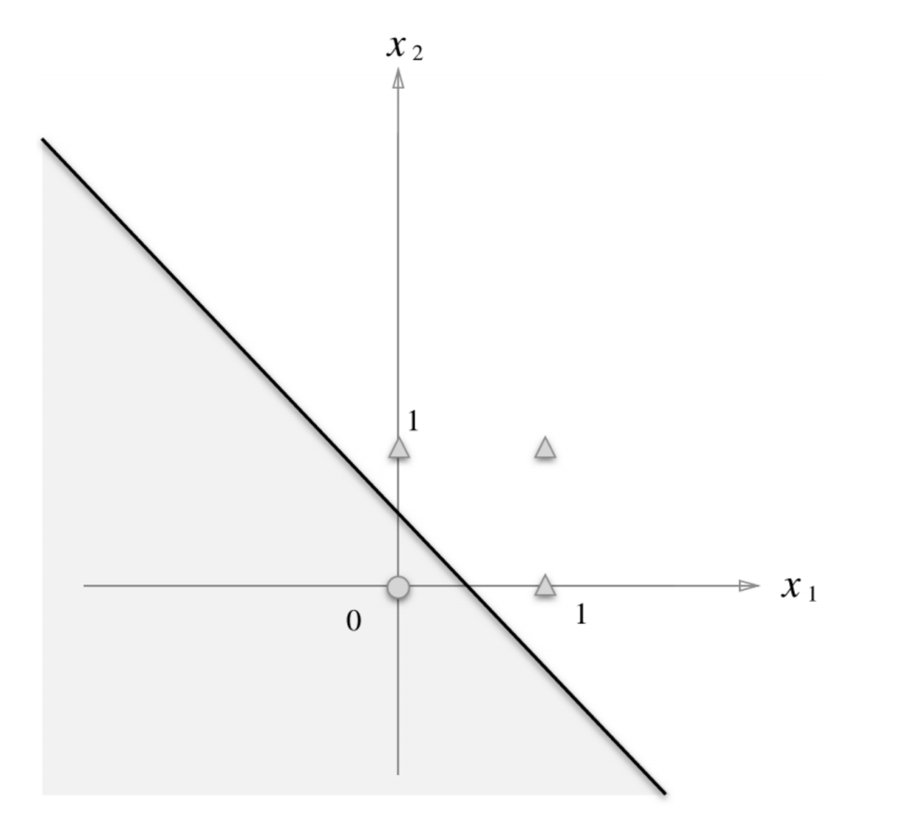
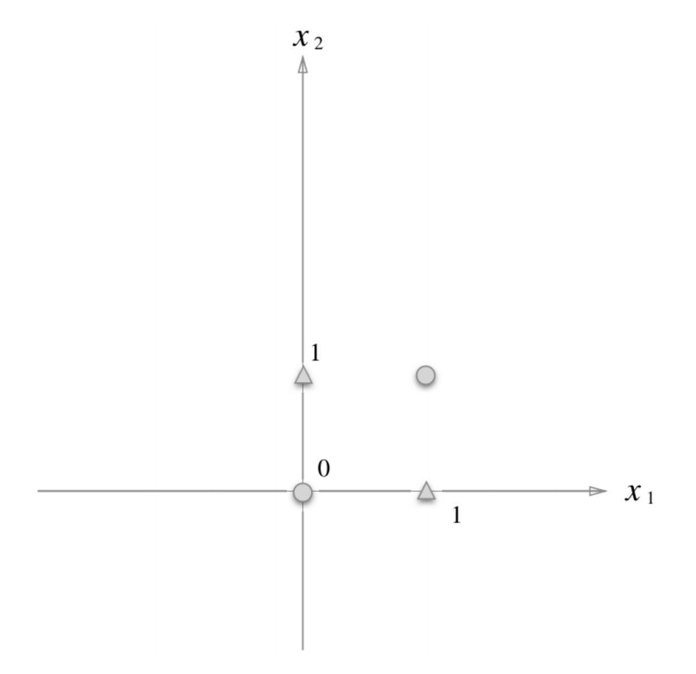
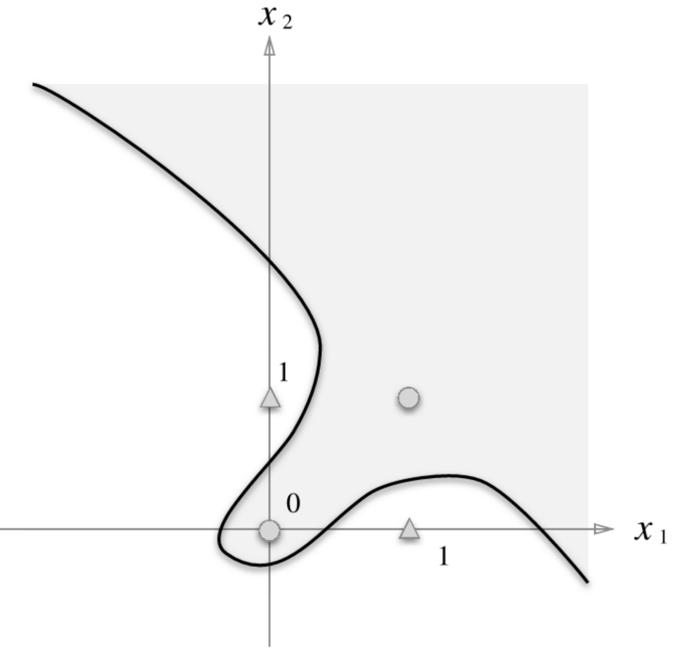
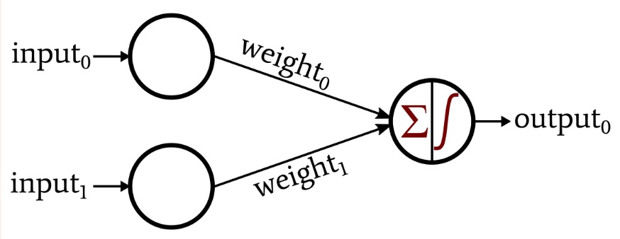
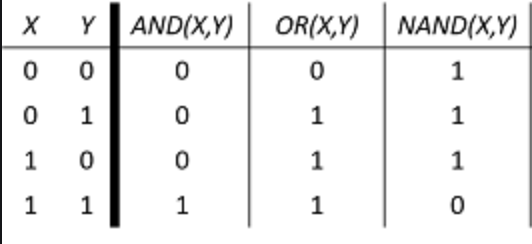

Under the category of Machine Learning, Deep Learning is a method that copied the structure of the human neuron network in order to allow the computer to discover the formula for a certain situation by repetitive exposure to a vast spectrum of information. The aforementioned formula refers to the procedure of determining the weight of the input, which means how significant the input is to the output. So when it is given a problem, it will have the ability to draw out the solution by utilizing the formula it had found itself.
Perceptron is an artificial neuron that is regulated by the weight of the input. There are only two possible outputs: "pass on" or "don't pass on". The perceptron passes on the information if only the weight is over a set limit. However, a single layer of perceptrons has restrictions on drawing out the results when the problem gets more complex.

When we graph out the inputs as points and the formula as a line, as above, this set of points can be easily divided by a linear line.

However, this set of points face difficulties when the computer uses the same formula to draw the line that separates the points. Here, a line with curves is needed.

To overcome this conundrum, people decided to overlap multiple layers, using an output of a perceptron as an input of the next perceptron. By doing so, the computer is able to handle a tremendous number of inputs by drawing a curved line on the graph shown above, to get the solution.
This is an example of a perceptron with two inputs.

Q. Solve the logic gates (AND, OR, NAND) that receives two inputs and produces one output using the concept of a perceptron.
Logic gates require two inputs and one output - either 1 or 0 - that represents whether the information will flow to the next perceptron or not. During this process, the input is multiplied by the weight to determine if it reaches the limit. To illustrate this feature of a perceptron, we will use this formula: x*w1 + y*w2 + b. (x and y refer to the inputs, w1 and w2 refer to the weight, and b refers to bias.). If the output is greater than 1, print 1; if the output is less or equal to 0, print 0.

x = [[1,1],[1,0],[0,1],[0,0]]
AND = [1,0,0,0]
OR = [1,1,1,0]
NAND = [0,0,0,1]x is the set of input and AND, OR, NAND is the set of outputs.
import numpy as np
while True:
l = []
w1 = np.random.normal()
w2 = np.random.normal()
b = np.random.normal()
for i in x:
if i[0]*w1 + i[1]*w2 + b > 0:
l.append(1)
else:
l.append(0)
if l == NAND:
print(w1,w2,b)
print(l)
breakSince we don't have a specific problem, we will use a random feature to get an arbitrary number for weights and bias. random.nomral is used because we want both positive and negative integers (gaussian distribution). First, create a list to append the outputs produced later on. We use the formula that determines the flow of the information and appends 1 if the input reaches the limit (greater than 0) while appends 0 if the input doesn't (less or equal to 0). If the set of output matches the template for NAND, print the weight and the bias used to solve the problem.
while True:
t = []
w1 = np.random.normal()
w2 = np.random.normal()
b = np.random.normal()
for i in x:
if i[0]*w1 + i[1]*w2 + b > 0:
t.append(1)
else:
t.append(0)
if t == OR:
print(w1,w2,b)
print(t)
break
y = [[1,0],[1,1],[1,1],[0,1]]
while True:
s = []
w1 = np.random.normal()
w2 = np.random.normal()
b = np.random.normal()
for i in y:
if i[0]*w1 + i[1]*w2 + b > 0:
s.append(1)
else:
s.append(0)
if s == AND:
print(w1,w2,b)
print(s)
breakWe repeat the same procedure for OR and AND by changing the template that the set of outputs should match to.
Until now, there was no hindrance to solving these logic gates. But what if I want the set of outputs to be [0, 1, 1, 0]? It is impossible to get an answer without an alternative method. With more than two layers of the perceptron network, the computers will be able to solve more complicated and challenging problems such as getting the set of outputs of [0, 1, 1, 0]!
import numpy as np
x = [(0,0),(1,0),(0,1),(1,1)]
XOR = [0,1,1,0]As the example above, we create a set of inputs and a template that we want the set of outputs to be matching.
def A(x1,x2):
w1 = np.random.normal()
w2 = np.random.normal()
b = np.random.normal()
result = x1*w1 + x2*w2 + b
if result >0:
return 1
else:
return 0
def B(x1,x2):
w1 = np.random.normal()
w2 = np.random.normal()
b = np.random.normal()
result = x1*w1 + x2*w2 + b
if result >0:
return 1
else:
return 0
def C(x1,x2):
w1 = np.random.normal()
w2 = np.random.normal()
b = np.random.normal()
result = x1*w1 + x2*w2 + b
if result >0:
return 1
else:
return 0Here, we made three functions A, B, C. They are not specifically labeled as AND, NAND, or OR because, in reality, this is a computer's job to catch distinctive characteristics of these functions and recognize them. We use the same formula to govern the flow of data.
x = [(0,0,0),(1,0,1),(0,1,1),(1,1,0)]
total = 0
while True:
cnt = 0
for i,j,k in x:
if A(B(i,j),C(i,j)) == k:
cnt +=1
if cnt == 4:
break
else:
total +=1
print(total)In x, the first two numbers are inputs and the last number is the corresponding output (= XOR). The outputs of B and C are manipulated into the inputs of A to get XOR. The double-layering method enables us to get a conclusion that was not possible when it was single-layered because the output is not related to the input from the first layer; it corresponds to the output of the first layer. As a result, the goal of deep learning is precisely locating thousands and millions of weights and biases.